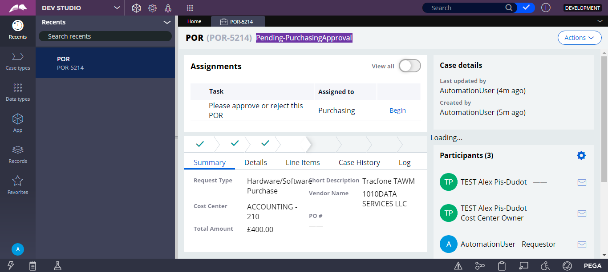
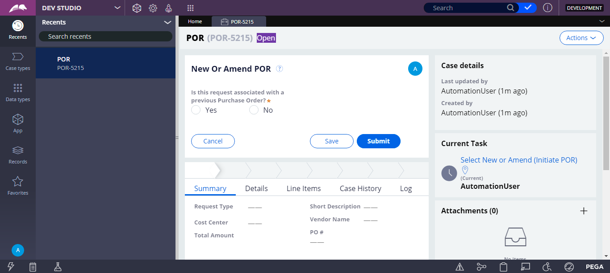
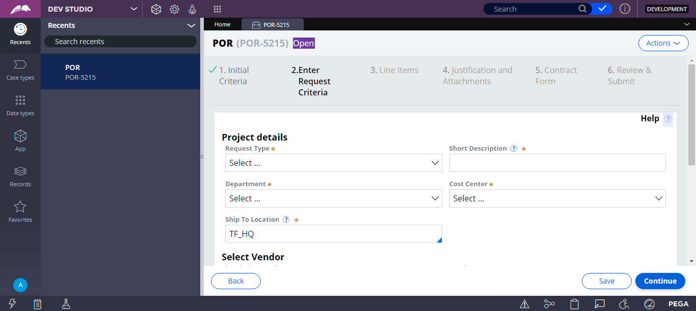

| Time | Log Level | Log Message |
| Tue Sep 15 13:44:28 IST 2020 | INFO | Start Time:Tue Sep 15 13:44:25 IST 2020 |
| Tue Sep 15 13:44:28 IST 2020 | INFO | Environment: TRACFONE-DT1 |
| Tue Sep 15 13:44:28 IST 2020 | INFO | Environment URL: https://trcfne-campgn-dt1.pegacloud.net/prweb |
| Tue Sep 15 13:44:28 IST 2020 | INFO | Browser Type: CHROME |
| Tue Sep 15 13:44:30 IST 2020 | INFO | Env Name:TRACFONE-DT1 |
| Tue Sep 15 13:44:30 IST 2020 | INFO | Env Name:TRACFONE-DT1 |
| Tue Sep 15 13:44:43 IST 2020 | INFO | Logging in as user apattanaik@tracfone.com |
| Tue Sep 15 13:44:43 IST 2020 | INFO |  |
| Tue Sep 15 13:45:01 IST 2020 | INFO | The created POR Case ID is :POR-5215 |
| Tue Sep 15 13:45:01 IST 2020 | INFO | Test passed, but no ID provided - Expected = ' Open ' : Actual = 'Open' |
| Tue Sep 15 13:45:01 IST 2020 | INFO | Divcontains the expected Text ' Open ' |
| Tue Sep 15 13:45:01 IST 2020 | INFO |  |
| Tue Sep 15 13:45:03 IST 2020 | INFO | Caught StaleElementReferenceException |
| Tue Sep 15 13:45:04 IST 2020 | INFO | Caught StaleElementReferenceException |
| Tue Sep 15 13:45:11 IST 2020 | INFO |  |
| Tue Sep 15 13:45:14 IST 2020 | INFO | PASS: Validation type was not marked as optionalBy.xpath: //input[@data-test-id='20200116165450027568383']: Test Passed |
| Tue Sep 15 13:45:25 IST 2020 | INFO | Caught StaleElementReferenceException |
| Tue Sep 15 13:45:50 IST 2020 | INFO | Caught StaleElementReferenceException |
| Tue Sep 15 13:46:02 IST 2020 | INFO | Test passed, but no ID provided - Expected = ' Pending-CostCenterApproval ' : Actual = 'Pending-CostCenterApproval' |
| Tue Sep 15 13:46:02 IST 2020 | INFO | Divcontains the expected Text ' Pending-CostCenterApproval ' |
| Tue Sep 15 13:46:12 IST 2020 | INFO | Test passed, but no ID provided - Expected = ' Pending-PurchasingApproval ' : Actual = 'Pending-PurchasingApproval' |
| Tue Sep 15 13:46:12 IST 2020 | INFO | Divcontains the expected Text ' Pending-PurchasingApproval ' |
| Tue Sep 15 13:46:21 IST 2020 | INFO | org.openqa.selenium.TimeoutExceptionthrown exception while trying to locateBy.xpath: [@data-test-id="2014100911285001362285"] |
| Tue Sep 15 13:46:27 IST 2020 | INFO | org.openqa.selenium.TimeoutExceptionthrown exception while trying to locateBy.xpath: [@data-test-id="2014100911285001362285"] |
| Tue Sep 15 13:46:32 IST 2020 | INFO | org.openqa.selenium.TimeoutExceptionthrown exception while trying to locateBy.xpath: [@data-test-id="2014100911285001362285"] |
| Tue Sep 15 13:46:37 IST 2020 | INFO | org.openqa.selenium.TimeoutExceptionthrown exception while trying to locateBy.xpath: [@data-test-id="2014100911285001362285"] |
| Tue Sep 15 13:46:43 IST 2020 | INFO | org.openqa.selenium.TimeoutExceptionthrown exception while trying to locateBy.xpath: [@data-test-id="2014100911285001362285"] |
{kind=link}
{kind=link}
{kind=link}